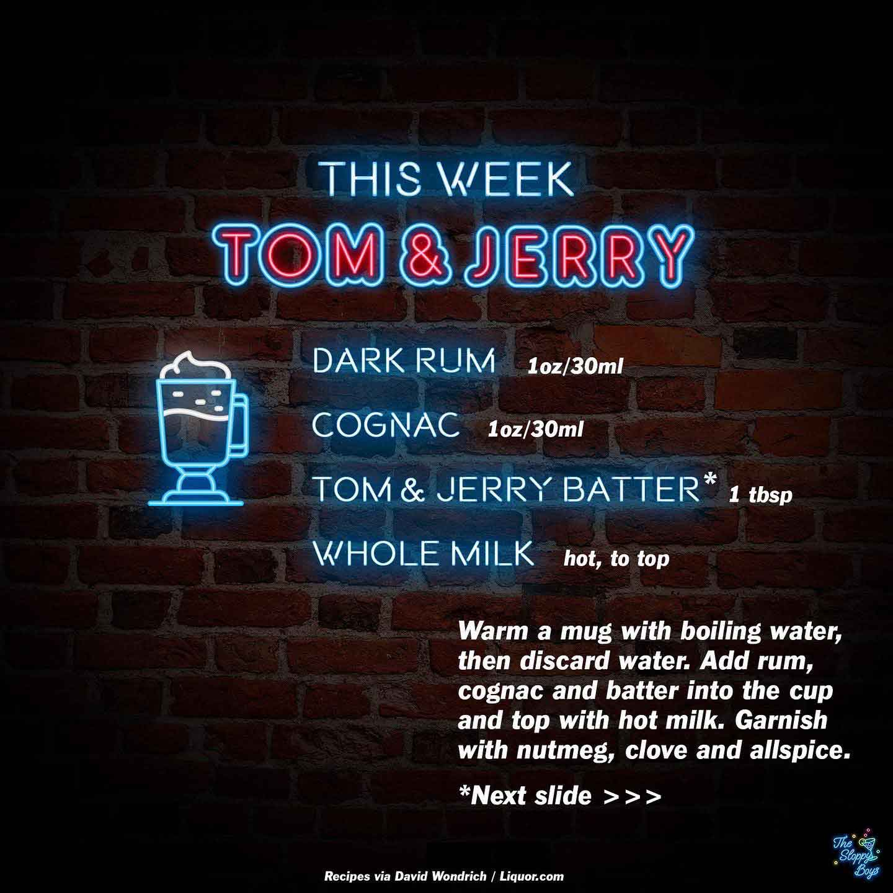

Tom & Jerry
Ingredients
- Dark Rum (1oz/30ml)
- Cognac (1oz/30ml)
- Tom & Jerry Batter (1 tbsp)
- Whole Milk (hot, to top)
Steps
- Warm a mug with boiling water, then discard water.
- Add rum, cognac and batter into the cup and top with hot milk.
- Garnish with nutmeg, clove and allspice.
Notes